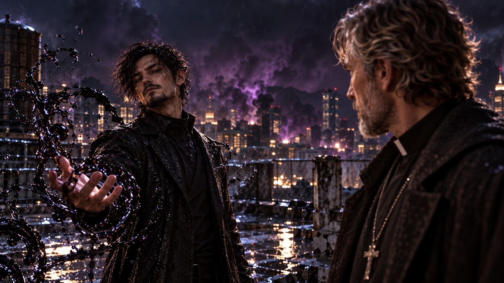
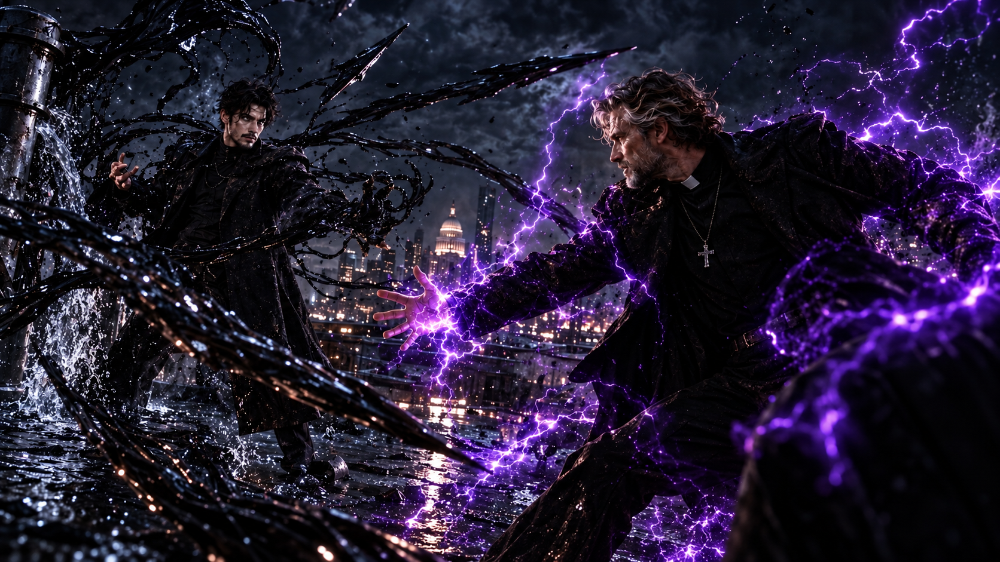
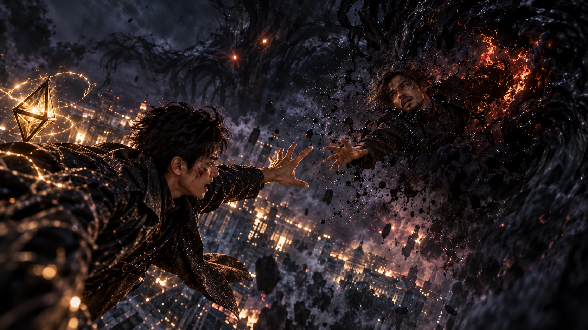

WHITE MAGIC ART STUDIO
第二十一章
家譜中被抹去的名字
美國．猶他州．鹽湖城
黑霧正一點一點吞沒鹽湖城。
原本燈火通明的街道，如今只剩下零星的光亮。濃稠的陰影沿著建築外牆攀附，從巷弄間不斷湧出，將整座城市籠罩在令人窒息的寂靜之中。
然而，這片寂靜並不安寧。
城市上空，金色雷光與黑暗接連碰撞。
雷・安德烈與羅尼正竭力牽制魔神，阻止牠將黑霧繼續向外擴散。
地面上，潔西卡帶領東湖教會的聖術師們穿梭於街道之間。他們一面抵擋因魔神現世而暴動的惡魔，一面引導尚未被黑霧吞沒的市民撤離。
雷聲、火光與遠處的呼喊，不時打破城市的沉寂。
而在東城高中的頂樓，一名男子正獨自站在圍欄旁。
他靜靜俯瞰著這一切。
黑霧從遠方的街道緩緩升起，映在他的眼中，卻沒有激起絲毫波瀾。
彷彿眼前的災難，只是一場早已安排妥當的演出。
忽然——
一道紫色雷光劃破夜空。
轟！
電流在頂樓中央炸開。
隨著光芒散去，一道身影出現在男子身後。
傑西緩緩站直身體。
他望著那個熟悉又陌生的背影，目光冰冷。
「我終於找到你了……」
男子沒有回頭。
傑西向前走了一步。
「塞西爾。」
他的聲音微微一沉。
「或者，我該叫你……堂哥？」
男子沉默片刻。
接著，他輕輕笑了。
「哼……哈哈哈……」
笑聲在空曠的頂樓上迴盪。
他緩緩轉過身。
傑西終於看清了他的面容。
那是一張看來不過三十出頭的臉，嘴角帶著若有似無的笑意，眼神卻冷得讓人不寒而慄。
「你真的什麼都不知道啊，傑西叔叔。」
男子微笑著說。
「連站在面前的是誰都認不出來，也難怪。」
傑西的眉頭猛然皺起。
「你……」
他仔細端詳著眼前的人。
「你不是塞西爾？」
男子臉上的笑意逐漸淡去。
「塞西爾早在二十年前就死了。」
傑西怔住。
「……你說什麼？」
男子緩緩朝他走來。
「我叫鮑勃・約爾森。」
他停下腳步。
「塞西爾的親生兒子。」
傑西的眼神驟然一變。
「也就是你的姪子。」
鮑勃望著他，語氣平靜得近乎嘲諷。
「我從來沒有打算隱瞞自己的名字。頂多就是當初假扮瑞秋男朋友的時候，稍微改變了外貌，再換個姓氏。」
傑西一時說不出話。
他望著眼前的年輕男子，試圖從那張臉上尋找自己記憶中塞西爾的影子。
「可是……」
他的聲音有些發顫。
「塞西爾他……」
「他是被你們逼死的！」
鮑勃突然怒吼。
轟隆！
頂樓附近的水管猛然爆裂。
水流從破裂的管線中噴湧而出，整棟建築也隨之震動。
傑西下意識穩住身形。
鮑勃卻沒有再向前。
他站在原地，胸口微微起伏。
過了片刻，他才重新開口。
「約爾森家族。」
他的聲音低了下來。
「號稱雷之名門的聖術師家族。」
鮑勃抬起頭。
「可是自從家族裡出現繼承水之力的後裔，一切就變得不一樣了。」

傑西沒有打斷他。
「三十年前，象徵家族榮耀的寶物——鳴之戒失竊。」
鮑勃望著傑西。
「我父親不擅長與人相處，平常又沉默寡言。再加上他繼承的不是雷，而是水之力……」
他冷笑一聲。
「家族長老就認定他是小偷。」
「沒有證據。」
鮑勃的聲音越來越沉。
「甚至沒有給他解釋的機會，就直接把他逐出家門。」
傑西的目光緩緩垂下。
他不自覺地摸向自己的手指。
那裡戴著一枚戒指。
鳴之戒。
如今，這枚象徵約爾森家族當家身分的戒指，正戴在他的手上。
鮑勃注意到了這個動作。
「沒錯。」
他冷冷地說。
「戒指後來找回來了。」
傑西抬起頭。
「因為我父親親自抓到了真正的小偷，把鳴之戒交還家族。」
鮑勃停頓片刻。
「他以為，這樣就能證明自己的清白。」
他的嘴角微微顫動。
「可是你知道那些人怎麼說嗎？」
傑西沉默不語。
「他們說他墮入禁術，說他和惡魔交易，說他早就無藥可救。」
鮑勃輕輕搖頭。
「他們寧願再找一個理由把他趕走，也不願意承認自己冤枉了他。」
風吹過頂樓。
遠方傳來一陣沉悶的雷聲。
「其他家族成員也是一樣。」
鮑勃望著傑西。
「沒有人願意查證，沒有人願意質問長老。」
他停了一下。
「包括你。」
傑西的神情微微一變。
「你沒有問過他到底發生了什麼事。」
鮑勃說。
「你只是和其他人一樣，慢慢把他忘了。」
傑西垂下目光。
他想開口，卻發現自己竟找不到任何一句足以反駁的話。
鮑勃沒有停下。
「我父親死前，精神早就快撐不住了。」
他的聲音漸漸沙啞。
「他每天坐在房間裡，對著牆壁重複同一句話。」
鮑勃停頓了一下。
「『我沒有偷。』」
傑西的手指微微收緊。
「他那時候已經很虛弱了，卻還是努力教我怎麼生活。」
鮑勃望向遠方。
「他甚至告訴我，不要恨家族裡的人。」
他的嘴角浮現一抹苦笑。
「他說，總有一天，家人會明白的。」
鮑勃低下頭。
片刻後，他重新看向傑西。
「可是我明白了什麼？」
他一字一句地說：
「我明白，是你們把他逼到那個地步的。」
傑西沒有回答。
「連他的葬禮，我都沒辦法安心用約爾森這個姓氏替他辦。」
鮑勃的聲音逐漸顫抖。
「因為正是這個姓，讓他失去了一切。」
傑西終於開口。
「……鮑勃。」
他緩緩向前。
「我不知道當年竟然——」
「閉嘴！」
鮑勃猛然抬頭。
周圍的水流再次震動。
「不知道？」
他盯著傑西。
「這就是你們最擅長的事，對吧？」
傑西停住腳步。
「不知道發生了什麼，也不知道自己做錯了什麼。」
鮑勃的聲音越來越激動。
「只要不去問，就可以當作什麼都沒發生過！」
傑西的目光微微一顫。
鮑勃深吸一口氣。
「我早就不相信這個世界了。」
他望著傑西，眼中滿是憤怒。
「你們聖術師總是把拉比的救贖、世界的希望掛在嘴邊。」
「可是你們自己做了什麼？」
傑西站在原地。
鮑勃抬起雙手。
遠方的黑雲翻騰，魔神的低吼隱約從城市上空傳來。
「這個世界根本沒有真正的公義。」
他望向天空。
「拉比或許真的犧牲了自己，也確實帶來了救贖與希望。」
「可是世界又變成了什麼樣子？」
鮑勃的聲音越來越激動。
「戰爭、歧視、謊言……」
「還有像我父親那樣，被所有人拋棄的人！」
他猛然握緊雙手。
「所以，十五年前，我找到了撒旦的碎片。」
傑西的眼神一沉。
「我用血祭釋放魔神，讓牠來審判這個世界。」
鮑勃看向他。
「也審判你們這些滿口正義，卻始終活在謊言裡的家族。」
傑西的呼吸微微一滯。
鮑勃繼續說：
「只是我沒想到，安德烈家族那個蠢貨竟然會犧牲自己，把魔神封印在體內。」
「為了解開那個血祭封印，我可是費了不少工夫。」
他忽然笑了。
「還意外發現，傳說中的『雷翼』竟然真的存在。」
傑西緊盯著他。
「但最讓我意外的，是詹姆斯的遺體。」
鮑勃的笑意逐漸擴大。
「竟然就安放在我們家族的陵墓裡。」
他輕輕搖頭。
「你不覺得很奇妙嗎？」
傑西沒有回答。
「就好像有人早就替我安排好了一切。」
鮑勃抬起頭。
「只等我去打開那扇門。」
他笑了起來。
「如果這不是神的安排，又是什麼？」
傑西皺緊眉頭。
鮑勃的笑聲越來越大。
「所以說……」
他張開雙臂。
「我的所作所為，不就是被神默許的嗎？」
「哈哈哈哈！」
他仰頭大笑。
「祂默許了我！」
「祂一直都在看著我！」
傑西望著他，神情越來越沉重。
「你把事情想得太簡單了。」
他的聲音低沉。
「拉比沒有阻止你，不代表祂認同你所做的一切。」
鮑勃的笑聲戛然而止。
他緩緩低下頭。
「認同？」
那張臉上的笑容逐漸消失。
「你們總以為一切都掌握在自己手裡。」
鮑勃輕聲說。
「可是你們連審判什麼時候降臨，都不知道。」
他再次抬起雙手。
黑色水流沿著地面緩緩聚集。
「魔神大人已經答應我了。」
傑西看著他。
「等一切結束之後，牠會賜給我力量。」
鮑勃的眼神逐漸狂熱。
「讓我成為魔皇。」
他向前踏出一步。
「我，鮑勃・約爾森，將用牠賜予我的力量重塑這個世界。」
「讓那些活在謊言裡的人，看清真正的救贖是什麼！」
鮑勃望著傑西。
「來吧。」
他微微張開雙手。
「一起見證新的救贖。」
話音剛落，周圍的水塔與管線同時發出劇烈震動。
轟！
大量水流從破裂的管線中噴湧而出，在空中迅速染成漆黑。
黑水環繞著鮑勃盤旋，接著猛然伸展，凝聚成數十道尖銳的長矛。
傑西的目光一冷。
下一瞬間，黑水長矛同時朝他襲來。

紫色雷光驟然亮起。
傑西的身影瞬間消失。
長矛接連擊中地面，碎石四散。
幾乎同一時間，傑西出現在鮑勃身後。
他揮出手臂。
一道紫色雷電橫掃而去。
然而，鮑勃身後的黑水突然升起，化成一道厚重的屏障，擋住了雷擊。
電流在水面炸開。
緊接著，兩道人形從黑水中竄出，一左一右朝傑西撲去。
傑西立刻化作紫光，向上瞬移。
但就在他重新現身的瞬間，上方破裂的管線突然噴出一道黑水，纏住他的腳踝。
「什麼？！」
傑西來不及掙脫，便被猛然拉回地面。
轟！
地板在撞擊下裂開。
鮑勃站在不遠處，微微一笑。
「果然，年紀會讓人變遲鈍呢。」
紫色電流沿著地面炸開。
黑水被震退。
傑西緩緩站起身，抬手擦去額角的灰塵。
他望著鮑勃周圍的黑水。
「這些被惡魔染黑的力量……」
傑西的聲音帶著怒意。
「你還敢說它是救贖？」
鮑勃只是輕輕搖頭。
「不。」
他抬起雙手。
「我只是終於看清這個世界的真相。」
轟隆！
整層樓的水管接連爆裂。
大量黑水從四面八方湧出，形成一道巨大的洪流，朝傑西席捲而來。
紫光再次閃爍。
傑西接連瞬移，在洪流之間迅速穿梭。
每一次現身，都有一道雷光劈向鮑勃。
然而，黑水總能在最後一刻升起，替鮑勃擋下攻擊。
傑西再次逼近。
他握緊拳頭，紫色雷電沿著手臂凝聚。
鮑勃冷笑一聲。
黑水瞬間形成護盾。
砰！
傑西的拳頭擊中水盾，卻被反震的力量逼退。
他在半空中翻身，落回地面。
呼吸逐漸急促。
鮑勃站在黑水中央，望著他。
「怎麼了？」
他輕聲問。
「你不是要來處理家務事嗎？」
傑西沒有回答。
他抬起頭，望向遠方。
在學校建築之外，魔神的黑霧仍然籠罩著城市。
那些被黑暗吞沒的人們，此刻正身陷其中。
傑西望著那片黑霧，忽然安靜了下來。
鮑勃皺起眉頭。
「你在看什麼？」
傑西緩緩收回目光。
「鮑勃。」
他的聲音平靜了許多。
「就算這個世界真的如你所說，充滿了不公義……」
他望著眼前的姪子。
「我們也沒有資格自認為審判者。」
鮑勃的神情一冷。
傑西繼續說：
「真正有資格審判我們的，永遠只有拉比。」
鮑勃冷笑。
「哼。」
他猛然揮手。
「那就讓我看看，祂會不會來救你！」
黑水再次爆發。
數道巨大的水流從四面八方湧來，整座頂樓在衝擊下開始崩塌。
傑西沒有後退。
紫色雷光沿著他的身體迅速凝聚。
下一瞬間，他迎著黑水衝了出去。
鮑勃猛然瞪大眼睛。
「什麼？！」
傑西的身影在雷光中穿過一道又一道水流。
他沒有再試圖從側面攻擊。
而是筆直朝鮑勃衝去。
「你——」
鮑勃還來不及反應，傑西已經來到面前。
他伸出雙手，緊緊抓住鮑勃的雙臂。
「放開我！」
鮑勃奮力掙扎。
黑水不斷衝擊兩人周圍。
傑西卻沒有鬆手。
紫色雷電開始沿著兩人的身體盤旋。
周圍的空氣劇烈震動。
一道由電流構成的漩渦，逐漸在兩人身旁展開。
鮑勃驚恐地望著那些雷光。
「你要做什麼？！」
傑西緊緊抓著他。
「既然我們都認為對方錯了……」
他的聲音幾乎被雷鳴掩蓋。
「那就別再讓這座城市替我們承擔代價！」
紫光驟然爆發。
轟！
兩人的身影同時消失在頂樓。
下一瞬間，一道耀眼的紫色雷光從東城高中上空疾射而出，朝城市中央那團巨大的黑霧飛去。
雷光沒入黑霧深處。
片刻後，一聲震耳欲聾的怒吼從黑暗中傳來。
濃重的黑霧劇烈翻騰，在空中形成一圈巨大的漩渦。
隨後，一切重新被黑暗遮蔽。
傑西與鮑勃的身影，再也看不見了。
同時間．鹽湖城上空
黑霧如潮水般在天空翻湧。
雷・安德烈懸浮在半空。
阿法在身旁高速旋轉，一道道金色電流沿著他的手臂延伸，在夜色中留下耀眼的光痕。
他緊盯著前方。
魔神的身影隱沒在黑霧深處，只有那雙眼睛仍清晰可見。
突然，魔神抬起手。
一道黑霧凝聚而成的箭矢疾射而出。
雷立刻向下閃避。
阿法在面前展開數層金色雷場。
轟！
黑霧撞上雷場，爆發出沉悶的巨響。
雷趁著衝擊散開的瞬間穿過空隙，迅速落向地面。
他雙手向下一按。
金色電流沿著地面向外擴散，將周圍的黑霧暫時逼退。
「來了！」
一道聲音從不遠處傳來。
羅尼從倒塌的建築上一躍而下。
他的雙頭火炬術器——晱，在半空中綻放出兩道耀眼火光。
火焰迅速延伸，如兩條燃燒的長蛇，朝魔神所在的位置疾馳而去。
轟！
黑霧被烈焰衝開。
魔神的身影短暫顯露。
然而下一瞬間，牠猛然張口。
數道黑色能量波接連轟出。
「小心！」
雷立刻向前。
阿法高速旋轉，金色雷電在他面前凝聚成數道屏障。
黑色能量接連撞上雷場。
每一次撞擊，都爆發出強烈的光芒。
雷咬緊牙關，持續維持屏障。
然而魔神的攻擊沒有停下。
一道接著一道。
雷只能不斷向後退去。
就在下一波能量即將突破雷場時，一道火光突然從他身旁掠過。
羅尼躍至雷的前方。
他將雙頭火炬猛然插向地面。
轟隆！
一道巨大的火牆拔地而起。
熾熱的火焰迎面擋住黑色能量，將雷與羅尼暫時護在後方。
雷抬頭看向他。
「撐得住嗎？」
羅尼咬緊牙關。
額角已經滲出汗水。
「死不了……」
雷沒有再說什麼。
他抬頭望向火牆之外。
魔神仍懸浮在黑霧中央。
牠似乎察覺到兩人正試圖重新組織攻勢，身後的黑霧突然劇烈翻騰。
大量黑暗從牠身旁湧出，朝兩人所在的位置迅速擴散。
「雷！」
羅尼大喊。
雷立刻升空，準備從上方突圍。
然而，那片黑霧彷彿早已預料到他的動作。
它迅速向上延伸，在半空中張開一道巨大的漩渦。
雷猛然停住。
但已經來不及了。
黑霧從四面八方包圍而來。
就在那片黑暗即將將他吞沒的瞬間——
一道火光突然從下方衝起。
「羅尼？！」
羅尼躍至雷的身旁。
他伸出雙手，用力將雷向上推去。
雷的身影被猛然送出黑霧包圍的範圍。
然而，羅尼自己卻失去了退路。
「羅尼！」
雷立刻回身。
他伸出雙手，試圖抓住對方。
卻只看見那道火光迅速被黑霧遮蔽。
「不——！」
羅尼的身影消失在黑暗之中。

原本耀眼的火焰，最後只剩下一點微弱的光芒。
隨後，也消失了。
雷怔怔停在半空。
阿法在身旁緩緩旋轉。
金色電流不時閃爍，卻再也照不出羅尼的身影。
他望著那片黑霧。
一時間，竟沒有任何動作。
他想起不久前，傑西向自己伸出的那隻手。
「至少，你不會獨自作戰。」
而現在，羅尼為了救他，也消失在了黑暗之中。
雷的呼吸逐漸急促。
魔神的笑聲從前方傳來。
「怎麼了？」
雷緩緩抬頭。
魔神站在黑霧中央，望著他。
「不打算再試著封印我了嗎？」
牠輕輕笑了。
「剛才不是還很有決心？」
雷的拳頭緩緩握緊。
阿法的金光再次亮起。
「你……」
他咬緊牙關。
正準備再次衝向魔神時，對方的表情卻突然變了。
魔神猛然轉頭。
牠的目光越過雷，望向城市另一端。
那張原本帶著嘲弄笑意的臉，忽然浮現出一絲難以掩飾的興奮。
「這感覺……」
牠低聲喃喃。
「這個氣息……」
雷皺起眉頭。
魔神的嘴角逐漸揚起。
「哼哼……」
牠忽然笑了起來。
「哈哈哈哈哈！」
雷的神情一沉。
「你在笑什麼？」
魔神沒有回答。
牠只是望著遠方。
「爸爸……」
牠輕聲說。
「又要和兒子見面了。」
雷猛然睜大眼睛。
下一瞬間，魔神已經轉身。
黑霧在牠身後迅速聚集，化成一道疾馳的暗影，朝城市另一端掠去。
「不會吧……」
雷的臉色瞬間變了。
「柴克！」
他沒有絲毫猶豫。
阿法驟然亮起。
金色雷光在夜空中劃出一道耀眼的軌跡。
雷緊追著那團黑霧，朝遠方疾馳而去。
而在黑暗籠罩的鹽湖城裡，一場無法迴避的相遇，正迅速逼近。